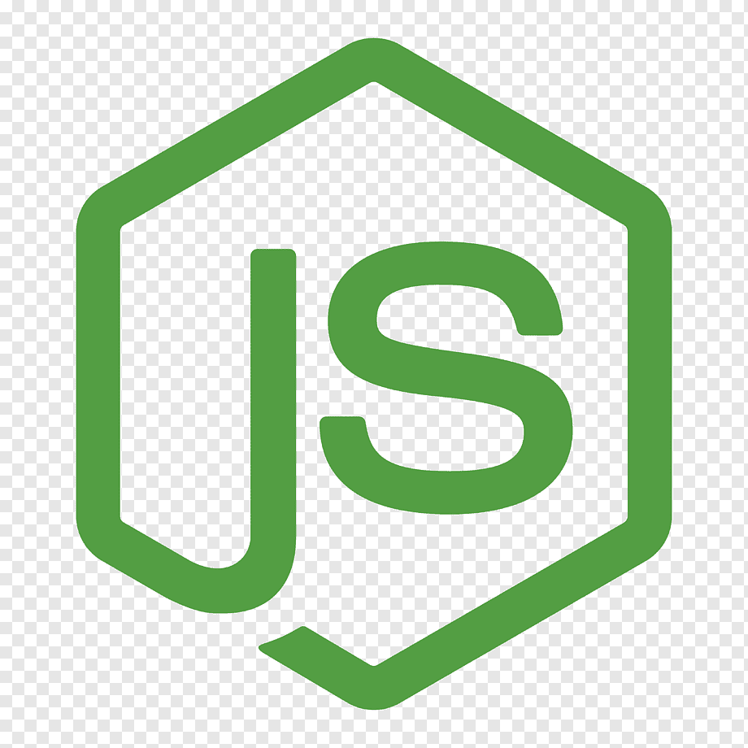
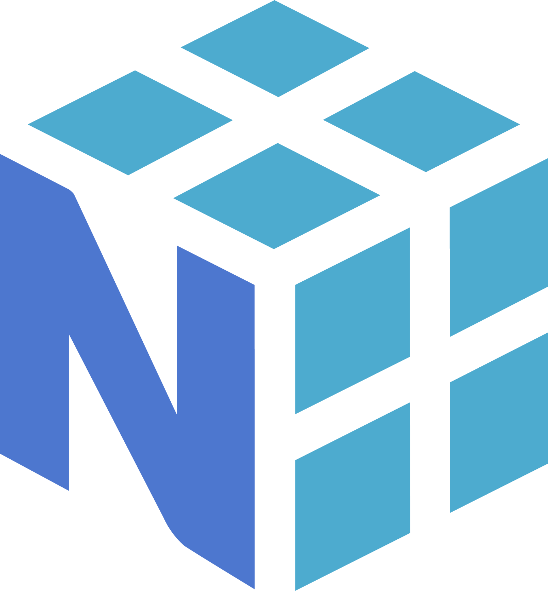
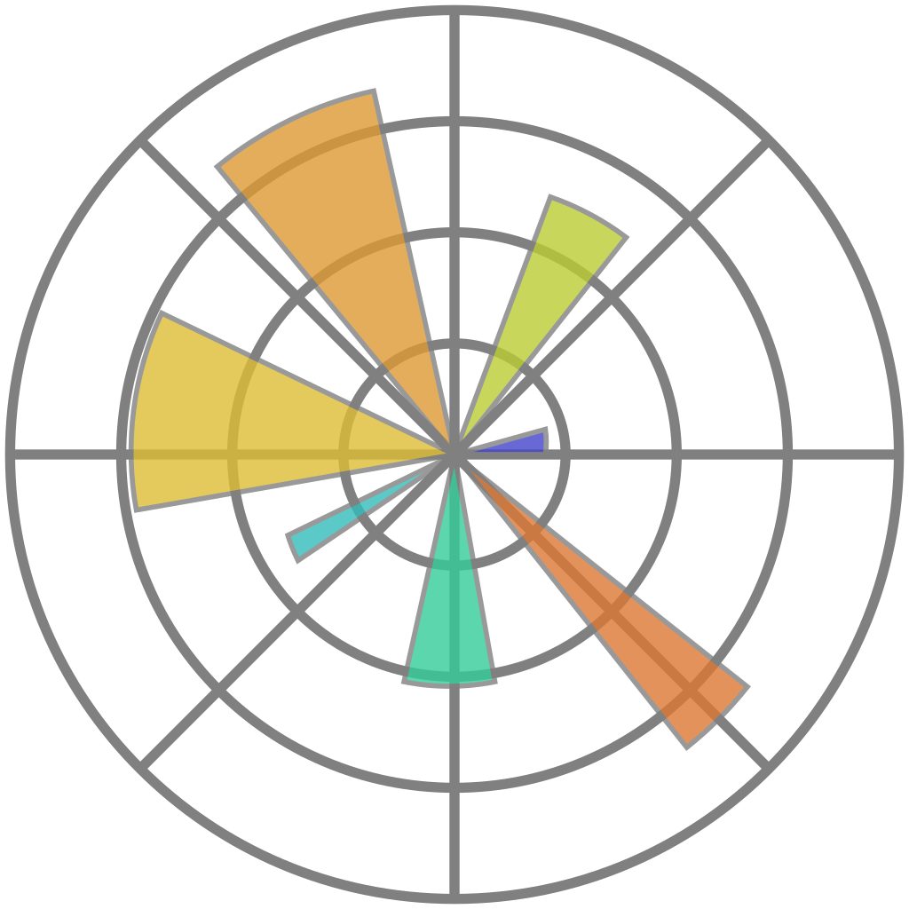
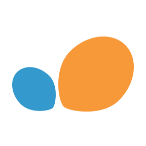
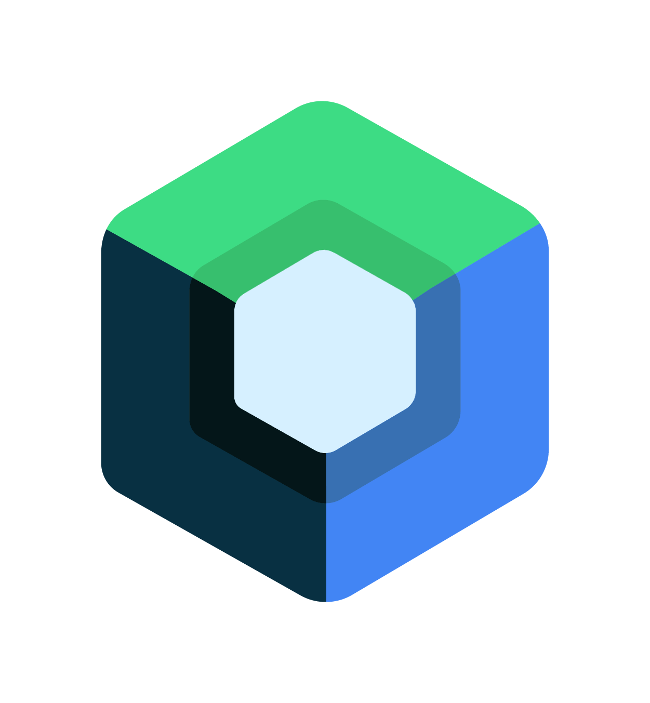

Technologies & Skills
Grouped by how I have actually applied them in practice.
Strong / practical experience
Applied in my internship, product work, and selected software projects.


REST
APIs
Frontend
QA
Unit
Testing
Documentation
Project / university experience
Solid foundations built through coursework and personal projects.







JWT
Authentication
Machine
Learning basics
Additional experience
Languages and tools I have worked with on a smaller scale.





C#